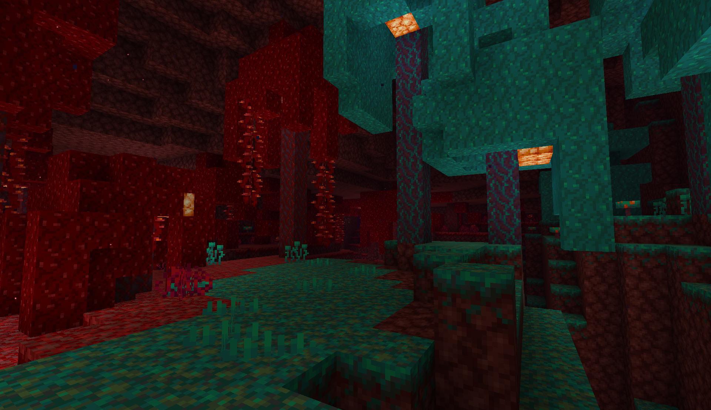
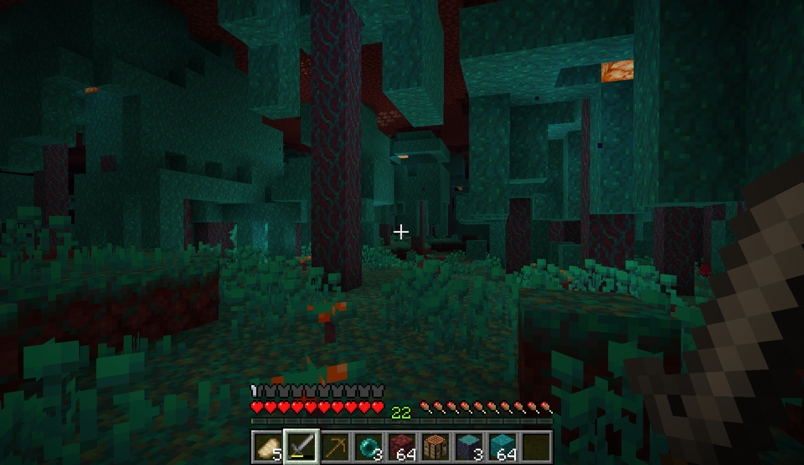
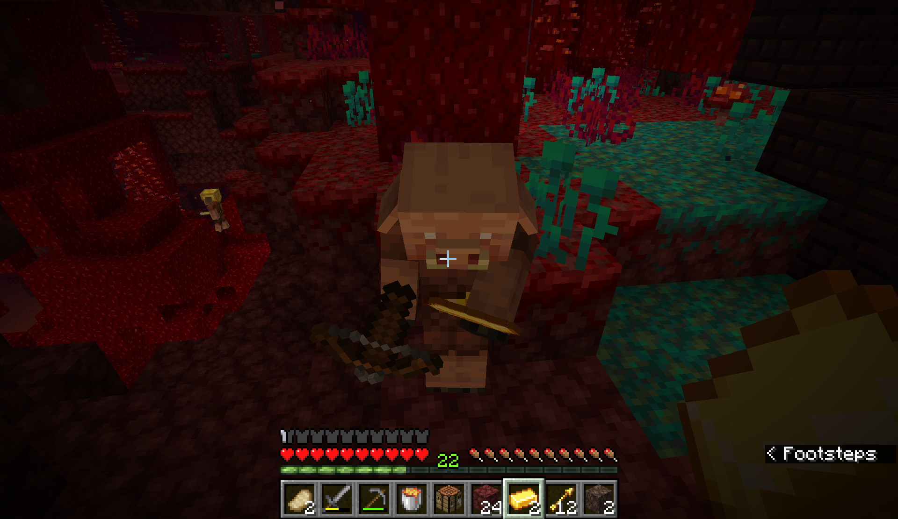
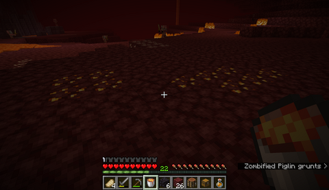
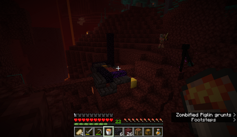
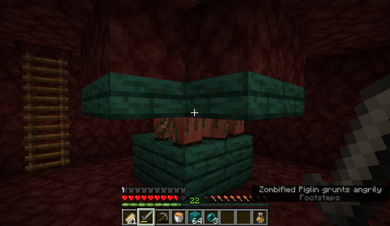

How to Survive in the Nether
This site teaches about surviving in the Nether. Specifically, how to survive using only resources found in the Nether. This is a unique challenge with several limitations. Even if you aren't doing this challenge, information here can still be helpful for generally exploration and survival.
Base Location

If you are building a base in the Nether, I suggest building in the Warped Forest. There are a couple reasons for this. One, Warped Forests provide easy access to wood. Second, no hostile mobs spawn here. There are Endermen, but they are much easier to deal with than piglins or magma cubes. If you build in a Crimson Forest you run into the issue of piglins seeing you use chests, which causes them to become hostile. I also recommend building a base close to other biomes if possible. Many resources are biome specific, so building near several grants easier access to a variety of items.
Getting Gold

Gold is the lifeblood of the Nether survival experience. You need gold armor to avoid angering piglins and bartering is the only way to renewably get lots of items. There are several ways to get gold in the Nether.
- Mining.
- Structures
- Zombified Piglin Farming
Gold is the only ore that spawns in the Nether. This is a good option for getting gold quickly, especially in the early game to avoid angering piglins. On that topic, be careful as you mine. Piglins close by get angry if you mine gold, regardless of if you are wearing gold armor.
Nether fortresses, bastion remnants, and ruined portals all have gold in chests and as a part of the structure. They can be a great option for getting large amounts of gold, but less reliably than gold ore. Ruined portals are safe, but don't have much gold. Fortresses don't have much gold either, but are valuable for other resources. Bastion remnants are the best structure for getting gold, but also the most dangerous. See the Structures page for advice on looting bastion remnants and nether fortresses. One last thing, gold blocks can only be mined with an iron pickaxe or better.
The only long-term renewable method for getting gold in the Nether is by farming Zombified piglins. This isn't too hard, but can be tedious. Zombified piglins are neutral, but all of them will be provoked if one is attacked. They spawn plentifully in the Nether waste biome. The best way to farm them is to build a hole that the zombified piglins will all fall into. Using trapdoors is effective because they can't tell that they will fall in. All you need to do is hurt one, and all the ones nearby will follow and fall in. Then you just need to kill them in the pit. They will drop rotten flesh, gold nuggets and gold swords.


